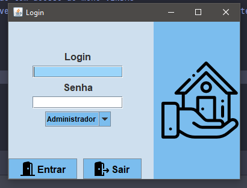
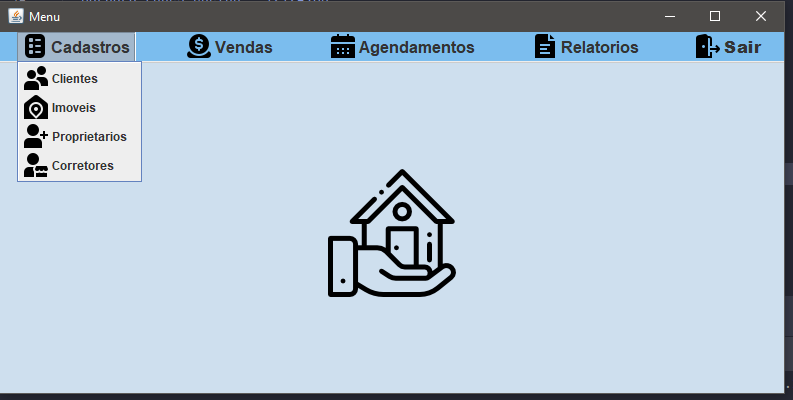
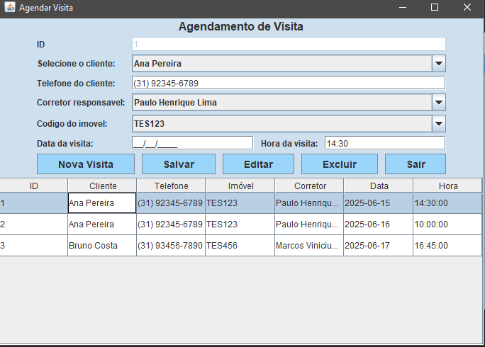

Sou Bárbara Lopes, estudante de ADS - 4° Período
Sou Bárbara Lopes Coelho, nascida em 2003 em Belo Horizonte/MG, cidade onde resido até hoje. Atualmente sou estudante de Análise e Desenvolvimento de Sistemas na Faculdade Newton Paiva e atuo como Analista de Suporte na Netimóveis.
Projeto interno para a Faculdade, orientado pelo Professor Marcelo, responsável pelas disciplinas de Programação Orientada a Objetos e Linguagem de Programação.
Este projeto é um sistema desktop para gerenciamento imobiliário, desenvolvido em Java, com interface gráfica em Swing e persistência de dados em MySQL. Segue os padrões de arquitetura MVC (Model-View-Controller) e DAO (Data Access Object), garantindo organização, separação de responsabilidades e manutenção facilitada.
Para ver mais do projeto, acesse meu GitHub.
  Telefone: (31) 98352-2361
Email: blcoelho51@gmail.com
LinkedIn: Meu LinkedIn